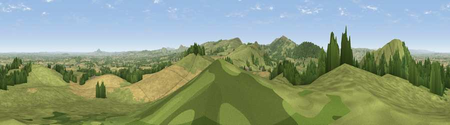

Church Hill
#2188 in England · top 5% of its area beats it · near Church PulverbatchThe view, rendered

A 360° render of this exact spot computed from the terrain model, tree cover and land cover — summer colours, afternoon light, calibrated against photographs of famous viewpoints. Real trees, hedges and buildings will differ in detail.
The panorama
Grey silhouette: terrain skyline in each direction (720 bearings, Earth curvature and refraction included). Dashed green: skyline with trees (+15 m) and buildings (+8 m) as obstacles. Blue strip: how far the ground is visible on each bearing.
Where the view opens
Wedge length = distance to the farthest visible ground on that bearing (vegetation-aware). Rings at 10, 25 and 50 km.
What fills the view
56% grassland · 27% cropland · 16% woodland ·
Angular shares of the visible panorama (visual magnitude), not map area. Landscape diversity 0.44 (0–1 Shannon).
Key numbers
More beautiful places nearby
The staircase of upgrades: each row has a higher view potential than everything closer. Driving times are estimates from straight-line distance, calibrated against real road routing — check an actual route before setting out.
| Place | Direction | Drive | Score |
|---|---|---|---|
| Earl's Hill | NW · 1 km | ~3 min | 82.2 |
| The Lawley | SE · 10 km | ~20 min | 85.8 |
| Viewpoint near Little Wenlock | E · 21 km | ~36 min | 86.6 |
| North Hill | SSE · 68 km | ~91 min | 86.8 |
| Worcestershire Beacon | SSE · 69 km | ~92 min | 87.1 |
| Viewpoint near Bossington | SSW · 163 km | ~185 min | 88.3 |
| Selworthy Beacon | SSW · 164 km | ~186 min | 88.7 |
| Holdstone Hill | SSW · 175 km | ~196 min | 90.2 |
52.63159, -2.86397 · source: dobih hill · position refined by local search. Computed location — check access rights before visiting.